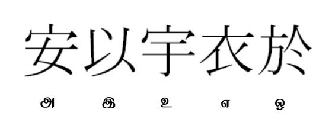
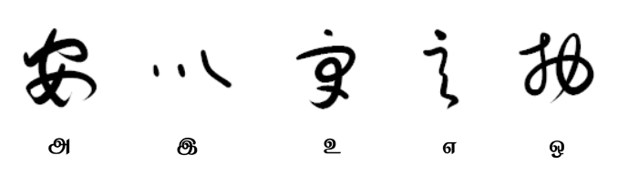
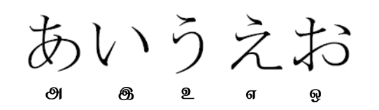
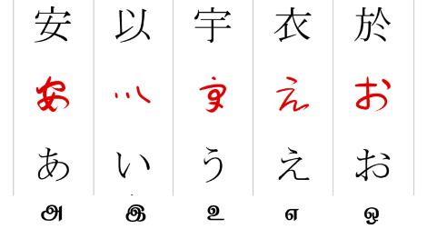
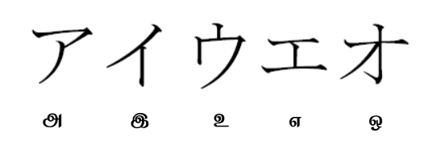
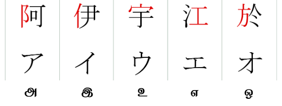
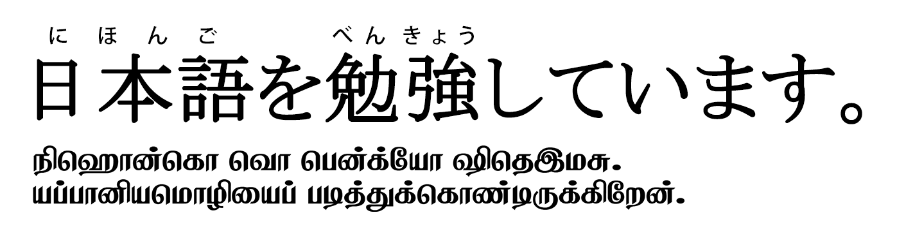

私の名前はナーガーラージです、ナーガーとよばれています。
日本語を2年べんきょうしています。
花も木も山も好きです。
えんぴつで顔をかくのが好きです。
மேலே நீங்கள் பார்ப்பது யப்பானிய மொழியில் என்னைப்பற்றிய ஒரு சிறு அறிமுகம். இதில் ஹிரகந, கதகந மற்றும் கான்ஜி எனப்படும் மூன்று வரிவடிவங்கள் உள்ளன. யப்பானிய மொழி இந்த மூன்று வரிவடிவங்களையும் ஒருங்கே கொண்ட ஒரு கலவையான வரிவடிவத்தை கொண்டுள்ளது, இதுவே இம்மொழியின் தனித்துவமாகவும் திகழ்கிறது.
அறிமுகம்:
பொதுவாக யப்பானிய மொழி ஒரு கடினமான மொழியாகக் கருதப்படுகிறது, அதற்கு முக்கிய காரணங்களுள் ஒன்று அதன் வரிவடிவம். யப்பானியர்கள் தங்கள் மொழியை எழுத மூன்று வரிவடிவங்களை கலந்து பயன்படுத்துகின்றனர். கான்ஜி என்றழைக்கப்படும் சித்திரஎழுத்து, கந என்றழைக்கப்படும் ஹிரகந மற்றும் கதகந வடிவங்கள் ஆகியவற்றைக் கொண்டது. Syllabic writing systems என்று வழங்கப்படும் இந்த கந வரிவடிவங்கள் அதன் வடிவமைப்பிலேயே தனித்த பண்புகளைக் கொண்டது. ஹிரகந வடிவம் வளை கோடுகளையும், நெழிவு சுழிவுகளையும் கொண்டு பார்க்க மென்மையாகவும், கதகந வடிவம் நேர் கோடுகளையும், கூர் மடிப்புகளையும் கொண்டு சற்று பார்க்க கடுமையாகவும் இருக்கும். ஹிரகந, "ஒன்னாதெ" அல்லது "மகளிர் கை" என்றும், கதகந "ஒதொகொமொஜி" அல்லது "ஆடவர் எழுத்துக்குறி" என்றும் யப்பானிய மொழியில் அழைக்கப்படுகிறது.
இரண்டாயிரம் ஆண்டுகளுக்கு முன்புவரை யப்பானிய மொழிக்கு எழுத்துவடிவம் இல்லை. சீனாவின் கலாச்சார, ஆன்மீக, அரசியல் தாக்கங்களினால் சீன சித்திரஎழுத்தான “ஹான்சி” 5ஆம் நூற்றாண்டில் அறிமுகமாகிய பிறகு யப்பானிய மொழியின் எழுத்துவடிவம் பல்வேறு கட்டங்களாக வளர்ச்சி கண்டது. கான்ஜி, ஹிரகந, கதகந ஆகிய மூன்றுமே தொடர் மாற்றங்களைக் கண்டது. இக்கட்டுரையில் இந்த யப்பானிய வரிவடிவங்களின் தோற்றம் மற்றும் வளர்ச்சியை வரலாற்றுக் கண்ணோட்டத்தில் அதாவது கான்ஜியின் ஆரம்பகால பயன்பாடு, பிறகு கான்ஜி எனும் சித்திரஎழுத்தைக் கொண்டே யப்பானிய மொழியின் ஒலிகளை எழுதப் பயன்பட்ட மண்யோகந எனும் முறைமை. பின் இவற்றிலிருந்து இதர கந எழுத்துக்களின் உருவாக்கம் என படிப்படியாக பார்க்கலாம். வெளியிலிருந்து பார்க்க கடினமாக இருக்கும் இந்த கலவை எழுத்து வடிவத்தின் வரலாற்று படிநிலை வளர்ச்சியை தெரிந்துகொள்வதன் மூலம் இதன் உள்ளார்ந்த எளிமையும், தனித்துவமும், இந்தக் கலவை வரிவடிவங்களின் ஒருமித்த தேவையும் நன்கு புரியும்.
கான்ஜி (漢字):

சீனாவிலிருந்து கடன் பெற்றுக்கொள்ளப்பட்ட “கான்ஜி” எனும் சித்திரஎழுத்து வடிவம் கொண்டு யப்பானிய மொழியை எழுதத் துவாங்கியபோது கான்ஜி வடிவம் அதன் அர்த்தத்திற்காக மட்டுமே தேர்வுசெய்யப்பட்டு பயன்படுத்தப்பட்டது, அதன் மூல உச்சரிப்புக்காக அல்ல.
எடுத்துக்காட்டாக, சீனமொழில் “山” என்ற கான்ஜி வடிவம் "ஷான்" என்ற உச்சரிப்பையும் "மலை" என்ற அர்த்தத்தையும் கொண்டது, யப்பானிய மொழியில் இதே கான்ஜியை “山” என்றே எழுதி "யம" என்று உச்சரிப்பார்கள், ஏனென்றால் யம என்பது மலையைக் குறிக்கும் ஒரு யப்பானியச் சொல்.
காலப்போக்கில் சில கலாச்சார, அரசியல், அறிவியல், ஆன்மீக சொற்கள் யப்பானிய மொழிக்குள் சீன தாக்கத்தால் வந்தபோது அவைகள் மெரும்பாலும் இரண்டு அல்லது அதற்கு மேற்ப்பட்ட கான்ஜிக்களை பயன்படுத்தி எழுதப்பட்டன, அவற்றின் சீன மூல உச்சரிப்பை மட்டும் எடுத்துக்கொண்டு அவ்வுச்சரிப்பை யப்பானிய மொழிக்கு ஏற்றாற்போல் சற்று திரித்துப் பொருத்திப் பயன்படுத்தினர்.
எடுத்துக்காட்டாக, சீனமொழியில் “大学” என்ற கூட்டுக்கான்ஜி சொல் "தாஹ்-ஹ்யாக்" என்ற உச்சரிப்பையும் "பல்கலைக்கழகம்" என்ற அர்த்தத்தையும் கொண்டது, யப்பானிய மொழியில் பல்கலைக்கழகம் என்றச்சொல் அதுவரை இல்லை ஆதலால் இதே கூட்டுக்கான்ஜியை அப்படியே “大学” என்று எழுதி அதன் சீன மூல உச்சரிப்பை யப்பானிய மொழிக்கு உட்படுத்தி "தை-ககு" என்று பயன்படுத்தலாயினர்.
சீன மொழியின் கான்ஜி வரிவடிவங்கள் தனியே வரும்போது ஒரு அர்த்தத்தையும் அவை இன்னொரு கான்ஜி உடன் சேர்ந்து வரும்போது (பெரும்பாலும் கலைச்சொற்கள்) இன்னொரு அர்த்தத்தையும் கொடுக்கும். இந்த “大学” என்ற கூட்டுக் கான்ஜி சொல்லில் “大” என்பது “ஓகி” என்ற யப்பானிய உச்சரிப்பையும் “பெரிய” என்ற அர்த்தத்தையும், “学” என்பது “மனபு” என்ற யப்பானிய உச்சரிப்பையும் “படிப்பு” என்ற அர்த்தத்தையும் கொண்டது. ஆனால் இவை இரண்டும் சேர்ந்து "大学" என்று எழுதும்போது "தை-ககு" என்ற சீன உச்சரிப்பையும் "பெரிய+படிப்பு" என்ற அர்த்தத்தையும் கொண்டுள்ளது, பெரியபடிப்பு என்றால் உண்மையில் "பல்கலைக்கழகம்" என்று சீன மொழியில் அர்த்தம்.
விளக்கமாகச் சொல்வதானால் “大” என்ற கான்ஜிக்கு “ஓகி” மற்றும் “தை” என்ற உச்சரிப்புகள் உள்ளன. இதில் “ஓகி” என்பது ஜப்பானிய சொல்லின் ஒலி ஆதலால் “குன்யோமி” அல்லது “யப்பானிய உச்சரிப்பு” என்றும், “தை” என்பது சீன சொல்லின் “தாஹ்” ஒலியிருந்து வந்தது ஆதலால் “ஒன்யோமி” அல்லது “சீன உச்சரிப்பு” என்றும் வழங்கப்படுகிறது. ஒரு கான்ஜிக்கு ஒன்றுக்கும் மேற்பட்ட ஒன்யோமி அல்லது குன்யோமி உச்சரிப்புகள் இருக்கலாம். பெரும்பாலும் ஒரு கான்ஜி தனித்து வரும்போது யப்பானிய குன்யோமி உச்சரிப்பையும் ஒன்றுக்கும் மேற்பட்ட கான்ஜிக்களுடன் இணைந்து வரும்போது அவை கலைச்சொல் ஆதலால் சீன ஒன்யோமி உச்சரிப்பையும் பெரும்.
மேலும் இங்கு “大” (ஓகி-பெரிய) எனும் சொல் “வகொ” அல்லது “யப்பானியச்சொல்” என்றும், “大学” (தைககு-பல்கலைக்கழகம்) எனும் கலைச்சொல் “கான்கொ” அல்லது “சீனச்சொல்” என்றும் வழங்கப்படுகிறது.
சீன மொழியில் இந்த கான்ஜி சித்திரஎழுத்து வடிவத்தின் இருப்பு அம்மொழியின் கலைச்சொல் உருவாக்கத்தை மிகவும் எளிமையாக்கிவிட்டது, அதனாலேயே சீன, யப்பானிய மொழிகளின் கலைச்சொற்கள் பொருளாழமின்றி வெறும் சொற்சிக்கனத்தை மட்டும் கொண்டிருக்கும். நான் நினைப்பது உண்டு ஒருவேளை யப்பானிய மொழியில் சீனத்தாக்கம் இல்லாமல் இருந்திருந்தால் தமிழ் மொழிபோல் பொருளாழமும் சொற்சிக்கனமும் கூடிய சொற்கள் யப்பானிய வேர்ச்சொற்களைக் கொண்டே உருவாக்கப்பட்டிருக்கும்.
ஆக, கான்ஜி எனும் சீன சித்திரஎழுத்து வரிவடிவம் காலப்போக்கில் அதன் அர்த்தம் மற்றும் உச்சரிப்பு ஆகிய இரண்டிற்க்காகவும் யப்பானிய மொழியால் கடன் பெற்றுக்கொள்ளப்பட்டது.
சீன மொழியில் ஹான்சி என அழைக்கப்படும் இவை சுமார் 5000-6000 எழுத்துக்களை கொண்டிருக்கும் என்றாலும் யப்பானிய மொழியில் சுமார் 3000 எழுத்துக்களே போதுமானதாக இருக்கிறது, மேலும் மக்கள் சூடும் பெயர்களுக்காக மட்டுமமே தனியாக சில ஆயிரங்களில் கான்ஜிக்கள் உள்ளன என்றாலும் அவை யப்பணியர்களுக்கே அவ்வளவாய் பிடிபடுவதில்லை.
மன்யோகந (万葉仮名):

சீன மொழியிலிருந்து முற்றிலும் வேறுபட்ட இலக்கண அமைப்பைக் கொண்ட யப்பானிய மொழியை நேரடியாக சீன வரிவடிவங்களைக் கொண்டு எழுதுவது சவாலாகவும், இயல்பற்றதாகவும், முழுமையற்றதாகவும் இருந்தது. இதனால், நரா காலத்தில் (710CE to 794CE) சில அறிஞர்கள் கான்ஜியின் அர்த்தத்தை விடுத்து, ஒவ்வொரு யப்பானிய ஒலிக்கும் ஒரு கான்ஜியை பொருத்தி ஒரு அறிச்சுவடியை அமைத்து பயன்படுத்தினர் அதுவே “மண்யோகந” என்றழைக்கப்பட்டது இதுவே இன்றைய நவீன “கந” வரிவடிவங்களின் முன்னோடி எனலாம். என்றாலும், ஐம்பது என்ற அளவிலுள்ள இந்த யப்பானிய அடிப்படை ஒலிகளுக்கு பலநூற்றுக்கணக்கான மன்யோகந எழுத்துகள் பயன்படுத்தப்பட்டன. உதாரணமாக, ‘கொ’ என்கிற ஒற்றை ஒலிக்கு மட்டுமே பலவகையான கான்ஜி எழுத்துகளை (己, 古, 故, 呼, 許, 子) அக்காலத்தில் உபயோகப்படுத்தினர். இன்னும் வேறுசில ஓசைகள் நூற்றுக்கணக்கில் கான்ஜி எழுத்துகளைப் பெற்றிருந்தன என காணமுடிகிறது.
மன்யோகநவில் “己礼和夜末之守” என்று எழுதப்பட்ட இந்த யப்பானிய வாக்கியத்தை “கொ-ரெ-வ-ய-ம-தெ-சு” என்று அக்காலத்தில் படிப்பர்.
கொரெ = இது
வ = வந்து
யம = மலை
தெசு = ஆகும்
இங்கே நீங்கள் பார்க்கலாம், “யம” அதாவது “மலை” என்பதை “山” என்று எழுதாமல் “夜末” என்று எழுதி “ய-ம” என்று படிப்பார். ஒவ்வொரு ஒலிக்கும் ஒவ்வொரு கான்ஜி. ஆனாலும் காரணம் இந்த எழுத்து முறைமை ஒழுங்கு படுத்தப்படவில்லை, பல அறிஞர்களும் தனித்தனியே கான்ஜிக்களை தேர்வு செய்து பயன்படுத்தினர்.
ஒன்றை நினைவில் வைத்துக்கொள்ள வேண்டும், முன்னர் கான்ஜியை அதன் அர்த்த மற்றும் உச்சரிப்புக்காக அப்படியே பயன்படுத்தியபோது, யப்பானிய மொழியில் எழுதப்பட்ட பத்திகளை யப்பானிய மொழியே தெரியாத ஒரு சீனர் கூட கான்ஜிக்களை அடையாளம்கண்டு அந்த பத்திகளின் அர்த்தத்தை ஓரளவு உள்வாங்கிக்கொள்ளமுடியும். ஆனால் இந்த மன்யோகநவில் அதற்க்கு வாய்ப்பே இல்லை, இங்கே மன்யோகந முறையில் முழுக்க முழுக்க யப்பானிய மொழியின் ஒலிமுறை அடிப்படையில் எழுதப்பட்டமையால் இவை கான்ஜி வரிவடிவத்திலேயே எழுதப்பட்டாலும் அவர்களால் படிக்க இயலாது.
நரா காலத்தில் “கோஜிகி” (712CE), “நிஹோன் ஷோகி” (720CE) மற்றும் “மன்யோஷூ” (759CE), போன்ற இலக்கியங்கள் எழுதி தொகுக்கப்பட்டன. இதில் மன்யோஷூ ஆனது அதுவரை வாய்வழி பாடல்களாக இருந்த யப்பானிய இலக்கிய கவிதைகளை முழுக்க முழுக்க கான்ஜிக்களை பயன்படுத்தி மன்யோகந முறையில் எழுதி தொகுக்கப்பட்ட மிகப்பெரிய தொகுப்பாகும், இதுவே இந்த கான்ஜி பயன்பாட்டு முறைமைக்கு “மன்யோகந” என்று பெயர் பெற்றுத்தந்தது. இன்றளவில் சில இலக்கிய மாணவர்கள் மற்றும் மொழியியல் அறிஞர்கள் மட்டுமே இந்த மன்யோகந எழுத்துக்களை கற்க்கின்றனர்.
சோகந (草仮名):

“சோகந” என்பது மன்யோகந எழுத்து முறை ஹிரகந எழுத்து வடிவமாக மாறுவதற்கு இடையில் இருந்த ஒரு வடிவமாகும். இதை “எழுத்து முறை” என்பதைவிட “எழுதும் முறை” என்றே சொல்லலாம். ஏனெனில் இந்த மன்யோகந ஆனது ஒரு ஒழுங்குபடுத்தப்படாத முறையாக இருந்தது ஒரு சவால் என்றால், இந்த கடினமான சிக்கலான கான்ஜி வடிவங்களை நினைவில் வைத்து எழுதுவது என்பது இன்னொரு சவால்.
இதை சரிசெய்ய கான்ஜி வரிவடிவமானது தூரிகை கொண்டு ஒரு ஓவியம்போல் வளைவு நெளிவுகளுடன் கலைநயத்தோடு எழுதப்பட்டது, அவ்வாறு எழுதுகையில் இயற்கையாகவே இக்கான்ஜி எழுத்துக்கள் சற்று எளிமைபட்டுப்போனது. இது ஹெயன் காலத்தில் (794CE to 1185CE) கவிதைகளும், அன்றாட குறிப்புகளும் எழுதப்பயன்பட்டது. “சோகந” என்றால் “புல் எழுத்து” என்று அர்த்தம், புற்கள் போல வளைந்து நெளிந்து இருப்பதால் இப்பெயர்பெற்றது, இன்றளவில் இது சில பாரம்பரிய அறிவிப்புப் பலகைகளில் மட்டும் அலங்கார எழுத்தாகப் பயன்படுகிறது. மற்றபடி பொதுமக்கள் எவரும் புழங்குவது இல்லை.
இந்த மன்யோகநவின் எளிமைபாடுத்தப்பட்ட சோகந வடிவத்திலிருந்து இன்னும் எளிமையாக்கப்பட்டு நெறிபடுத்தப்பட்டது தான் ஹிரகந. ஆனால் மறுபுறம் கதகந வானது சிக்கலான கான்ஜி வடிவத்திலிருந்து தேர்ந்தெடுக்கப்பட்ட எளிமையான பகுதிகளிலிருந்து உருவானது, எனவே அவை நேர்கோடுகளையும் கூர் மடிப்புகளையும் கொண்டுள்ளது. ஒப்பீட்டளவில், இவை இரண்டுமே ஒரே காலத்தில் (9-10ஆம் நூற்றாண்டுகளில்) தனித்தனியே உருவாகின. முன் கூறியபடி சுவாரஸ்யமாக, ஹிரகநவைப் பெண்எழுத்து என்றும், கதகநவை ஆண்எழுத்து என்றும் வழங்கும் வழக்கம் இருந்தது. அது ஏன் என்று பின்னர் பார்க்கலாம்.
ஹிரகந (ひらがな):

“ஹிரகந” என்பது மேற்கக்கூறியபடி கான்ஜியின் ஒரு எளிமைபடுத்தப்பட்ட வரிவடிவம், இது யப்பானிய மொழியின் அடிப்படை ஒலிகளைக் குறிக்கப் பயன்படுகிறது. இன்று 46 அடிப்படை ஒலிகள்/எழுத்துகள் உள்ளன.

ஹிரகநவை முதலில் பெண்கள் அதிக அளவில் பயன்படுத்தினர், பெண்கள்தான் உருவாக்கினார்கள் என்றே சொல்லலாம். அக்காலத்தில் ஆண்கள் சீன மொழி மற்றும் கான்ஜி ஆகியவற்றை கற்றுக்கொள்வதில் ஆர்வம் காட்டினர், பெண்களுக்கு அனுமதி குறைவாகவே இருந்தது. அதனால், அரசமரபுவழிப் பெண்கள் தங்கள் நாட்குறிப்புகள், கவிதைகள், சிறுகதைகள் ஆகியவற்றை எழுத ஹிரகநவைப் பயன்படுத்தினர். “முரசாகி ஷிகிபு” எழுதிய “கெஞ்சி மோனோகதாரி” மற்றும் “செய் ஷோனாகோன்” எழுதிய “மகுர நோ சோஷி” போன்ற மிகமுக்கிய இலக்கியங்கள் பெரும்பாலும் ஹிரகநவில் எழுதப்பட்டவையே. ஹிரகந இன்றளவில் கான்ஜி தேவையில்லாத சொற்களுக்கும், சொற்க்களின் உருமாற்றங்களுக்கும் (வினை/கால/பெயர்ச்சேர்க்கைகள்), வேற்றுமை உருபுகளுக்கும், இதர இலக்கணப் பண்புகளை குறிப்பதற்க்கும் ஒரு அடிப்படை எழுத்துமுறையாகப் பயன்படுத்தப்படுகிறது. 1900 மற்றும் 1946 ஆண்டுகளில் ஒழுங்குபடுத்தப்பட்டு, சில சீர்திருத்தங்களும் செய்யப்பட்டு இன்றைக்கு இருக்கும் இந்த நிலையான வடிவத்தைப்பெற்றுள்ளது.
கதகந (カタカナ):

“கதகந” பௌத்தத் துறவிகள் சீனக்கான்ஜியின் யப்பானிய உச்சரிப்பைச் சுட்டிக்காட்ட பயன்படுத்திய சுருக்கெழுத்திலிருந்து உருவானவை. பெரும்பாலும் இவற்றை பயன்படுத்தியவர்கள் ஆண்கள்/ஆண் துறவிகள்.

ஹெயான் காலத்தின் தொடக்கத்தில் புத்த நூல்கள் மற்றும் சீன இலக்கியங்கள் பற்றிய அறிமுகம் யப்பானிய அறிஞர்களிடையே பரவ தொடங்கியது. சீன உரைகளை எளிதாகப் புரிந்துகொள்ள, துறவிகள் மன்யோகந மற்றும் இந்த சுருக்கெழுத்துகளை பயன்படுத்தினர். முன் கூறியபடி மன்யோகந/கான்ஜியை யப்பானிய மொழியின் ஒலிகளுக்காக பயன்படுத்துவது கடினமானதாகவும், மேலும் எழுதுவதற்கு அதிக இடமும் நேரமும் தேவைப்பட்டதால், துறவிகள் மன்யோகந/கான்ஜி வரிவடிவத்திலிருந்து ஒரு குறிப்பிட்ட பகுதியை மட்டும் எடுத்து சுருக்கி குறியீடுகளை உருவாக்கினர். அந்த சுருக்கப்பட்ட கூர்மையான எழுத்துக்கள் தான் பின்னாளில் கதகந வாக உருவானது. தற்காலத்தில் வெளிநாட்டுச் சொற்கள், தொழில்நுட்ப மற்றும் அறிவியல்ப் பெயர்கள், நிறுவனப் பெயர்கள் மற்றும் இரட்டைக்கிழவி போன்றவற்றை எழுத பயன்படுத்தப்படுகிறது. ஹிரகநவைப் போலவே, கதகநவும் 1900 மற்றும் 1946 ஆண்டுகளில் ஒழுங்குபடுத்தப்பட்டு, சில சீர்திருத்தங்களும் செய்யப்பட்டு இன்றைக்கு இருக்கும் இந்த நிலையான வடிவத்தைப்பெற்றுள்ளது
ஃபுரிகந (振り仮名):

“ஃபுரிகந” என்பது கான்ஜியின் உச்சரிப்பை காட்டுவதற்காக அதன் அருகில் சிறிய கந எழுத்துக்களைக் கொண்டு எழுதும் ஒரு முறையாகும். இது தனி எழுத்துவடிவம் கிடையாது மாறாக ஒரு எழுதும்முறை அவ்வளவுதான், யப்பானிய மொழியை கிடைமட்டமாக எழுதும்போது இந்த சிறிய கந எழுத்துக்கள் கான்ஜி எழுத்துக்களின் மேல்புறமும், யப்பானிய மொழியை செங்குத்தாக எழுதும்போது இந்த சிறிய கந எழுத்துக்கள் கான்ஜி எழுத்துகளுக்கு வலப்புறமும் இடம்பெறும்.
இந்த முறைமை குறிப்பாக யப்பானிய மொழி கற்பவர்கள் மற்றும் குழந்தையருக்கு கான்ஜியின் உச்சரிப்பு தெரியாதபோது கந மூலம் உச்சரிப்பை தெரிந்துகொள்ள உதவுவதற்காக பயன்படுத்தப்படுகிறது.
யப்பானியர்கள் கான்ஜியை எழுதக்கற்றுக்கொண்ட காலம் தொட்டே இதுபோன்ற உச்சரிப்பு உதவிக்காக கான்ஜி அருகில் சுருக்கெழுத்து அல்லது கந கொண்டு எழுதும் முறை இருந்துவந்துள்ளது. நாளடைவில், கல்விச்சூழலில் அச்சு மற்றும் கணினியின் பயன்பாடு பரவிய காலத்தில் இந்த ஃபுரிகந பயன்பாடு மேலும் பரவலாக்கப்பட்டது.
சுருக்கம்:
இன்று பயன்பாட்டில் இருக்கும் யப்பானிய மொழி எழுத்து வடிவம் மிகநீண்ட வரலாறு கொண்டது, யப்பானிய மொழியின் எழுத்து வடிவங்களின் துவக்கப்புள்ளி சீன மொழியின் சித்திர எழுத்து வடிவம். சீன மொழி அல்லது கான்ஜி எழுத்தின் தாக்கம் யப்பானிய மொழி மட்டுமின்றி, கொரிய, வியட்நாமிய மொழிகளிலும் இருந்தது, காலப்போக்கில் கொரிய மக்கள் தங்கள் தேசிய அடையாளத்தை மீட்க கான்ஜியை விடுத்து “ஹங்குல்” என்ற வரிவடிவத்தை கண்டுபிடித்து பயன்படுத்தலானர், போலவே வியட்நாமிய மக்களும் கான்ஜியை விடுத்து லத்தீன்-லிபியை அடிப்படையாகக் கொண்ட ஒரு வரிவடிவத்தை பயன்படுத்துகின்றனர்.
யப்பானிய மொழியும் தங்கள் மொழிக்கு என்று தனியாக பல்வேறு முயற்சிகளைச் செய்துதான் இன்றைக்கு இருக்கும் இந்த கலப்பு வரிவடிவத்தை (கான்ஜி, ஹிரகந, கதகந) அடைந்துள்ளது. அந்த முயற்சிகள், மாற்றங்கள் எல்லாம் சீன கான்ஜி சித்திர எழுத்துக்களை அடிப்படையாகக் கொண்டே நடந்ததில் பெரிதாக சலித்துக்கொள்ள அவர்களுக்கு ஒன்றுமில்லை. பௌத்த மதத்தை ஏற்றுக்கொண்டவர்களுக்கு கான்ஜி பெரிய தடையாக இல்லை.